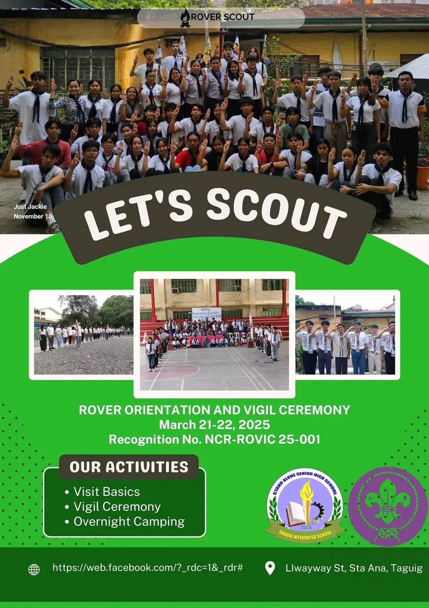
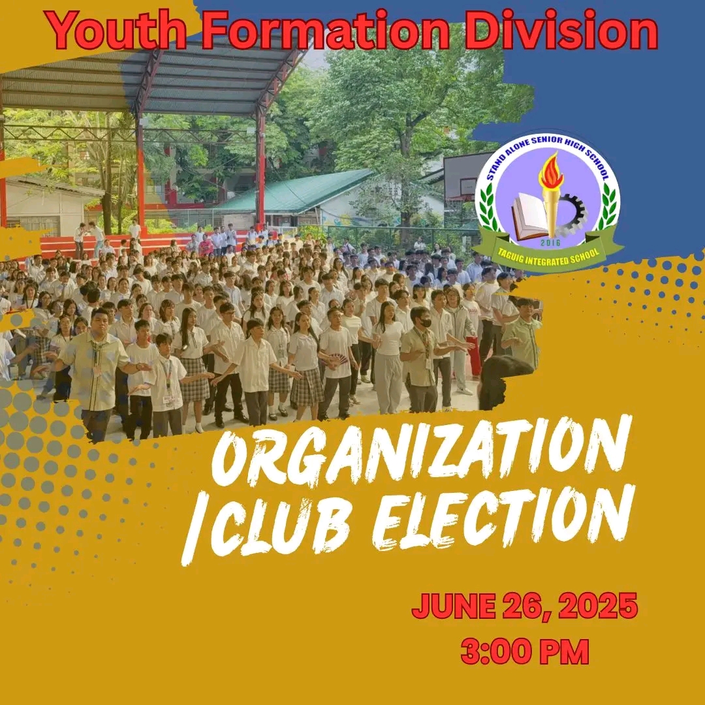
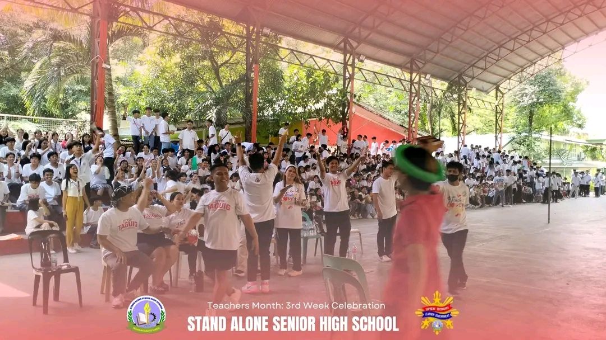

| All students and teachers are required to attend the flag ceremony every Monday at 6:45 AM at the TIS Covered Court. This weekly gathering is a show of respect for our nation and a reflection of being truly MAKABAYAN.
"Republic Act No. 8491, also known as the Flag and Heraldic Code of the Philippines. This act outlines the proper ways to display, use, and respect the Philippine flag, including regulations for flag-raising ceremonies. Additionally, Republic Act No. 1265 mandates flag ceremonies in all educational institutions." |
Orientation for Alternative Learning System (ALS).
"Opening Doors to Second Chances and Lifelong Learning!"
Enrollment is still ongoing! |
The Brigada Eskwela 2025 officially commenced with a successful Kick-Off Program attended by students, parents, and various stakeholders. The strong collaboration and support demonstrated during the opening event reflect the shared commitment to ensuring a safe, clean, and prepared learning environment. With continued cooperation throughout the week, Brigada Eskwela 2025 is expected to be a resounding success. |
|  |
 |
 |
| Let's Scout
ROVER ORIENTATION AND VIGIL CEREMONY
MARCH 21-22, 2025 |
Ready to Lead? Ready to Belong?
Be part of something bigger — join a school club or organization.
Don’t just go to school… get involved. Your leadership journey starts now! |
Enjoying and celebrating. The teachers' month celebration grew increasingly thrilling and exhilarating. We are grateful to our SSLG Officers for planning this kind of teacher-focused event. It was a straightforward but entertaining experience for our pupils. |
HOME ACTIVITY
Athena Shin G.Magallano
11th GRADE:ICT-INDUSTRY